選ばれる３つの理由
1.分解を下やめ悪臭を抑えた
独自の配合基材
生ごみを分解する基材は独自の黄金比を採用し、堆肥化までの分解を速め悪臭を抑えます。
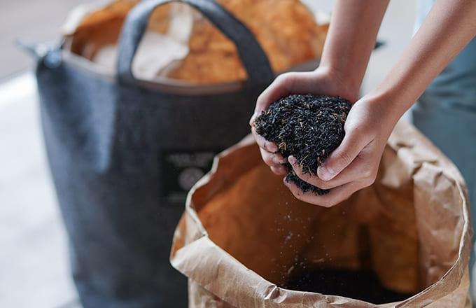2.ベランダで映える
スタイリッシュなバッグ。
キッチンやベランダに置いてコンポストや家庭菜園を楽しめる都市型コンポスト
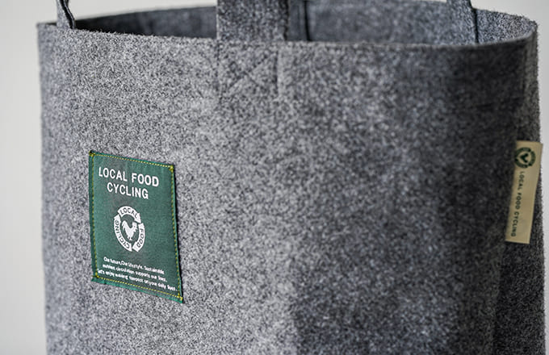3.不安や悩みはLINEですぐ解決
サポーターホットライン
コンポストをする上での不安やお悩みはプロがLINEで解決！購入前でも利用可能です。
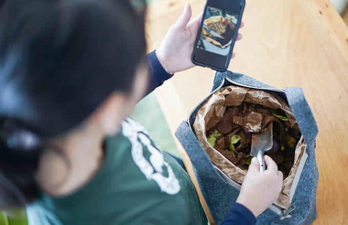アンバサダー紹介
この世に不要なゴミなんてない
本当は、この世に不要な「ゴミ」なんてない。すべて大地からのいただきものであり、すべて「命」だからだ。なかでも、時に嫌われがちな「生ゴミ」はもっとも命の濃度が高い存在。その貴重な命を…
執筆家
四角太輔
ヨガも体も地球も循環している
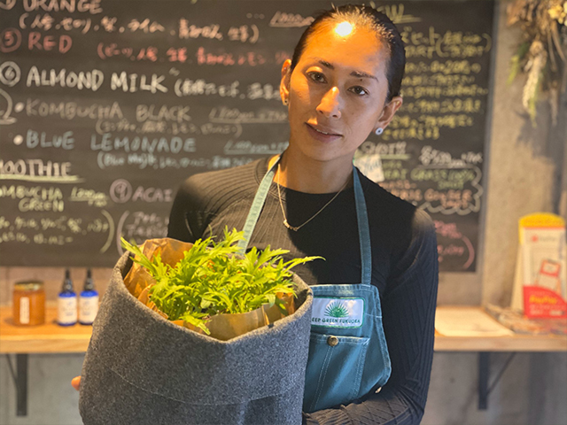Juiceという言葉には、フレッシュとか生き生きしてる、漲っているという意味があるんです。1日1杯の搾りたて無農薬の野菜と果物のジュースで1日をスタート。これがあるから出来るルーティン…
Ashtanga Yoga講師 DeepGreen代表
宮脇紫穂
生ごみを捨てない暮らし
コンポストで美味しい野菜をつくりませんか？
コンポストで美味しい野菜をつくりませんか？

こんな方にコンポストをおすすめします！
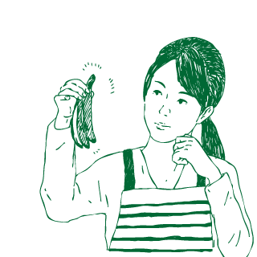
家庭の生ごみを捨てたくない
毎日の生ごみをコンポストに入れるだけで環境負荷を減らすエコ活動になります。
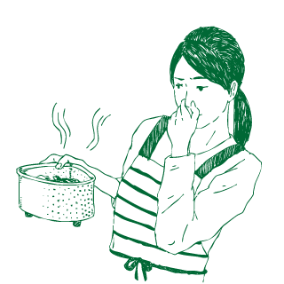
生ごみの臭いに困っている
基材と一緒に生ごみを混ぜて、密封する。家から生臭い臭いが消えていきます
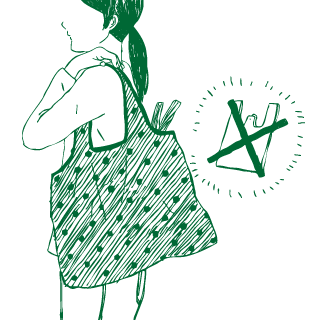
レジ袋をもらいたくない
ごみを捨てるためについもらうレジ袋。コンポストは不要なビニール袋を無くします
家庭菜園に自家製の土をつくりたい
ガーデニングや家庭菜園に必要な土。自家製で栄養たっぷりの土づくりができます
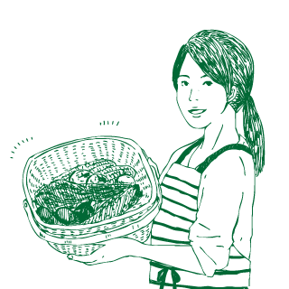
家庭で野菜をつくってみたい
栄養たっぷりの堆肥からつくられた野菜は美味しさが違います
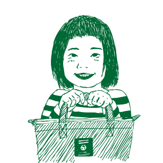
エコフレンドリーな暮らしをしたい
家族や子供とエコを大切にした暮らし。コンポストは家族の新しい価値をつくります
コンポストの不安や不明点を
LINEでご相談ください！
コンポストを利用するお客様の不安や心配、続けるためコツなどにコンポストのプロたちがLINEにてお応えします。是非、お気軽にご登録ください。
^
LFCイベント＆ブログ
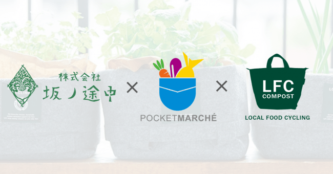
プレスリリース
2020.05.01
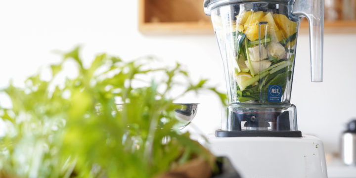
プレスリリース
2020.05.01
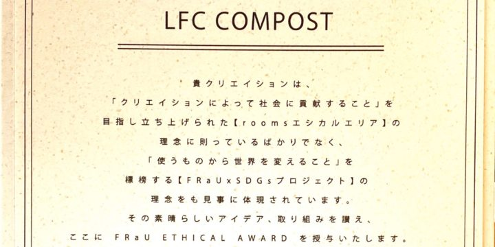
プレスリリース
2020.05.01
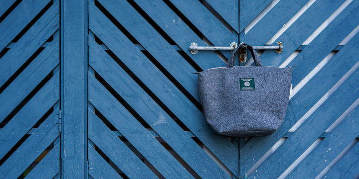
プレスリリース
2020.05.01